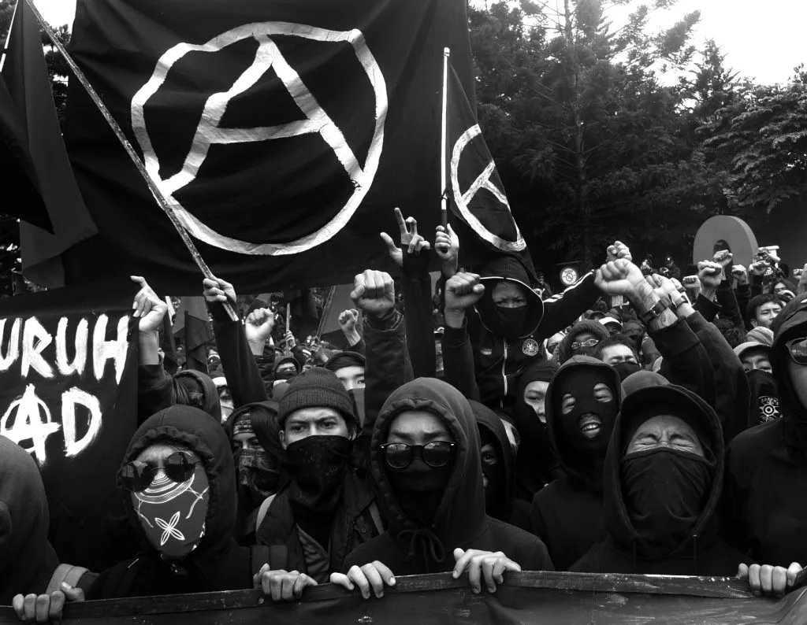

อนาธิปไตยเป็นสถานการณ์ที่"รัฐบาลไม่มี"
หรือไม่มีอำนาจหรือการควบคุมประชาชน
ปรัชญาของลัทธิอนาธิปไตยแนะนำว่าสังคมสามารถอยู่รอดและเจริญเติบโตได้ก็ต่อเมื่อดำเนินการภายใต้ทางเลือกอื่นนอกเหนือจากการปกครองโดยรัฐบาลแบบดั้งเดิม
แม้ว่ามักจะใช้ในความหมายที่ผิดในการอธิบายถึงสถานะของการไร้กฎหมายอย่างรุนแรง ความวุ่นวาย
และการล่มสลายของสังคม แต่อนาธิปไตยเป็นคำพ้องความหมายกับแนวคิดเช่น เสรีภาพ ความเป็นอิสระ และการปกครองตนเอง
ในทางทฤษฎี ลัทธิอนาธิปไตยมองเห็นสังคมที่สงบสุข ใจดี และยุติธรรมมากขึ้น

หลักการของอนาธิปไตย
อนาธิปไตย (Anarchism) เป็นอุดมการณ์ทางการเมืองที่มุ่งเน้นการสร้างสังคมที่ไม่มีระบบอำนาจรวมศูนย์ ไม่มีรัฐ
และไม่มีการบังคับควบคุมจากอำนาจส่วนกลาง โดยเชื่อว่า
มนุษย์สามารถปกครองตนเองได้อย่างเป็นอิสระและร่วมมือกันได้โดยไม่ต้องพึ่งพาสถาบันที่กดขี่
หลักการสำคัญของอนาธิปไตยมีดังนี้:
1. การต่อต้านอำนาจรวมศูนย์
อนาธิปไตยเชื่อว่าอำนาจที่รวมศูนย์ เช่น รัฐบาลหรือสถาบันที่ควบคุมประชาชน มักนำไปสู่การกดขี่และความไม่เท่าเทียม
2. ความเท่าเทียมและเสรีภาพ
เชื่อว่าทุกคนควรมีสิทธิ์เท่าเทียมในการแสดงออกและตัดสินใจในทุกเรื่องที่เกี่ยวข้องกับชีวิตของตนเอง
3. การร่วมมือกันอย่างสมัครใจ
มนุษย์สามารถสร้างระบบสังคมที่ใช้ความร่วมมือโดยสมัครใจ แทนการบังคับควบคุม
4. การจัดการตนเอง
กลุ่มหรือชุมชนสามารถบริหารจัดการตนเองได้โดยไม่ต้องมีผู้นำหรือผู้มีอำนาจสูงสุด
5. การปฏิเสธระบบเศรษฐกิจแบบทุนและชนชั้น
อนาธิปไตยต่อต้านระบบเศรษฐกิจที่สร้างความเหลื่อมล้ำ เช่น ทุนนิยม และสนับสนุนระบบที่ทุกคนมีส่วนร่วมอย่างเท่าเทียม
ลัทธิอนาธิปไตย
เป็นปรัชญาและขบวนการทางการเมืองที่ตั้งข้อกังขาต่อการให้ความชอบธรรมแก่อำนาจทุกรูปแบบ
และต้องการยกเลิกสถาบันใดก็ตามที่มองว่าใช้การบีบบังคับและการจัดลำดับชั้นโดยไม่จำเป็น
ซึ่งโดยทั่วไปรวมถึงแต่ไม่จำกัดเฉพาะรัฐบาล รัฐชาติ และทุนนิยม
ลัทธิอนาธิปไตยสนับสนุนการแทนที่รัฐด้วยสังคมไร้รัฐหรือสมาคมเสรีรูปแบบอื่น ๆ
และในฐานะขบวนการฝ่ายซ้ายในประวัติศาสตร์ที่มักถูกวางลงในฝั่งซ้ายสุดของสเปกตรัมการเมือง ลัทธิอนาธิปไตย ชุมชนนิยม
และลัทธิมากซ์แบบอิสรนิยมนับเป็นปีกอิสรนิยมของขบวนการสังคมนิยม (สังคมนิยมแบบอิสรนิยม)
ก่อนการสถาปนารัฐ ราชอาณาจักร หรือจักรวรรดิอย่างเป็นกิจจะลักษณะ
มนุษย์อาศัยในสังคมซึ่งไม่มีลำดับชั้นอย่างเป็นทางการ เมื่อองค์กรแบบลำดับชั้น
ถือกำเนิดขึ้น ความกังขาต่ออำนาจก็เช่นกัน แม้ว่าร่องรอยความคิดแนวอนาธิปไตยพบเห็นได้ตลอดห้วงประวัติศาสตร์
ลัทธิอนาธิปไตยสมัยใหม่ถือกำเนิดจากยุคเรืองปัญญา
ขบวนการลัทธิอนาธิปไตยเติบโตในหลายแห่งทั่วโลกในช่วงครึ่งหลังของคริสต์ศตวรรษที่ 19 และทศวรรษแรกของคริสต์ศตวรรษที่
20 และมีบทบาทสำคัญในการต่อสู้ปลดปล่อย กรรมกร
ในช่วงเวลานี้มีการก่อตั้งสำนักคิดอนาธิปไตยหลายสำนักขึ้นมา นักอนาธิปัตย์มีส่วนร่วมในการปฏิวัติหลายครั้ง
ที่โดดเด่นเช่นคอมมูนปารีส สงครามกลางเมืองรัสเซีย และสงครามกลางเมืองสเปน
ที่จุดจบของมันเป็นจุดจบยุคคลาสสิกของลัทธิอนาธิปไตย
ขบวนการอนาธิปไตยในช่วงปลายคริสต์ศตวรรษที่ 20 ดำเนินมาจนคริสต์ศตวรรษที่ 21 ฟื้นขึ้นมาอีกครั้ง
ความนิยมและอิทธิพลเติบโตภายในขบวนการต่อต้านทุนนิยม ขบวนการต่อต้านสงคราม
และขบวนการต่อต้านโลกาภิวัตน์
รูปแบบการปกครองในระบอบอนาธิปไตย
1. ประชาธิปไตยทางตรง (Direct Democracy)
หลักการ:
ทุกคนในชุมชนมีสิทธิ์ในการตัดสินใจเท่าเทียมกัน โดยใช้กระบวนการประชุมร่วม หรือการหารือในกลุ่มขนาดเล็ก
การทำงาน:
การออกเสียงทุกครั้งเกิดขึ้นจากความเห็นของทุกคน ไม่มีตัวแทนหรือผู้นำ
ใช้กระบวนการอภิปรายเพื่อหาฉันทามติ
เหมาะสำหรับชุมชนขนาดเล็กหรือองค์กรสหกรณ์
ตัวอย่าง:
การบริหารกลุ่มชุมชนในรูปแบบ "สภาประชาชน" หรือกลุ่มรณรงค์ทางสังคม
2. สหกรณ์นิยม (Collectivism)
หลักการ:
การรวมทรัพยากรและผลผลิตทั้งหมดไว้เป็นของส่วนรวม โดยสมาชิกทุกคนมีส่วนร่วมในการจัดการและรับผลประโยชน์อย่างเท่าเทียม
การทำงาน:
สินทรัพย์และผลผลิตถูกจัดการร่วมกันในกลุ่มชุมชน
การทำงานและผลประโยชน์ถูกแบ่งตามความต้องการและความสามารถ
ลดการครอบครองส่วนตัวที่สร้างความเหลื่อมล้ำ
ตัวอย่าง:
ระบบชุมชนการเกษตรแบบรวมกลุ่ม
3. การกระจายอำนาจ (Decentralization)
หลักการ:
ปฏิเสธการรวมศูนย์อำนาจในระดับประเทศหรือรัฐ แต่กระจายอำนาจไปยังชุมชนหรือกลุ่มขนาดเล็ก
การทำงาน:
ใช้การบริหารในระดับท้องถิ่นโดยตรง
ไม่มีโครงสร้างอำนาจสูงสุด เช่น นายกรัฐมนตรีหรือประธานาธิบดี
ชุมชนแต่ละแห่งสามารถตัดสินใจเองได้อย่างอิสระ
ตัวอย่าง:
การปกครองโดยกลุ่มชนพื้นเมืองที่จัดการตนเองในพื้นที่ของตน
4. การบริหารโดยกลุ่มหรือชุมชน (Communalism)
หลักการ:
สังคมถูกจัดการโดยชุมชนที่เชื่อมโยงกันเป็นเครือข่าย
การทำงาน:
แต่ละชุมชนมีสิทธิ์จัดการเรื่องของตนเอง แต่ทำงานร่วมกันในเครือข่ายขนาดใหญ่
ความสัมพันธ์ระหว่างชุมชนอยู่บนพื้นฐานของการร่วมมือและการช่วยเหลือ
เน้นความยั่งยืนและความสัมพันธ์แบบพึ่งพากัน
ตัวอย่าง:
ระบบหมู่บ้านในยุโรปสมัยกลางที่มีการจัดการทรัพยากรร่วมกัน
5. อนาธิ-สังคมนิยม (Anarcho-Socialism)
หลักการ:
การรวมกันของแนวคิดอนาธิปไตยและสังคมนิยม โดยปฏิเสธทุนนิยมและชนชั้น แต่สนับสนุนการกระจายทรัพยากรอย่างเท่าเทียม
การทำงาน:
ไม่มีเจ้าของทรัพยากรส่วนตัว ทรัพยากรทั้งหมดเป็นของชุมชน
การผลิตและการกระจายสินค้าถูกตัดสินใจโดยกลุ่มประชาชน
ใช้ระบบแลกเปลี่ยนแบบธรรมชาติ หรือระบบแบ่งปัน